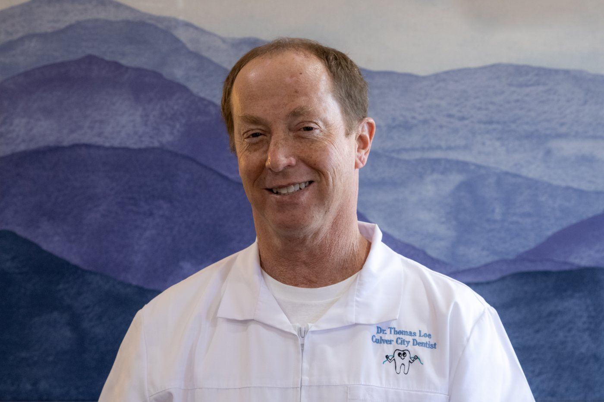
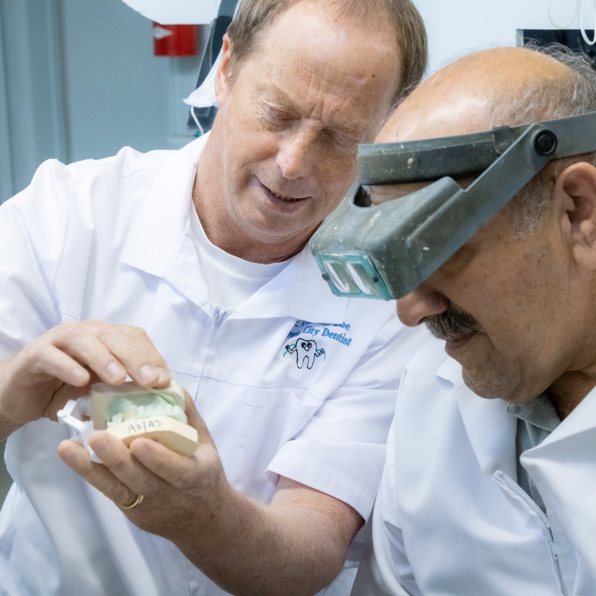
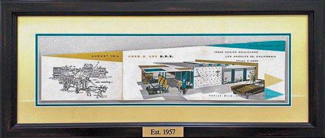

Good dentistry.
A family tradition.
Generations of care at the same corner of Venice Boulevard. Get to know Dr. Thomas Loe and the practice his family began in 1957.

One familiar practice.
A range of dental care.
From your regular check-up to a conversation about restoring your smile, find the right place to begin.
Start with the essentials.
Explore routine care with Dr. Loe and discuss the right next step for your visit.
Ask about everyday care- Dental examinations and check-ups
- Professional cleanings
- Custom night guards
- Preventive care conversations
Care for the smile you have.
A clear conversation about your teeth, your questions and the treatment options available.
Ask about restorative care- Fillings
- Crowns and implant crowns
- Bridges
- Complete and partial dentures
Explore what’s possible.
Talk through your goals with Dr. Loe before deciding whether cosmetic treatment is right for you.
Ask about cosmetic care- Dental bonding
- Veneers
- Teeth whitening
- A consultation about your goals

The same corner.
A continuing story.
Dr. Frederick Loe opened the practice in 1957. Today, his son Thomas continues that family tradition in Culver City.
A USC School of Dentistry graduate, Dr. Loe works with a longstanding team that includes senior technician Gabriel. Their practice brings together general dentistry and experience with crowns, bridges and dentures.

A page from the practice’s beginnings.
Culver City, 1957.
A straightforward
first step.
Call the office to choose a time, ask about insurance and find out which new-patient forms to bring.
Current patient informationAre new patients welcome?
Yes. The practice welcomes new patients. Call the office to discuss availability and arrange your first visit.
What about insurance?
The current practice website lists most PPO insurance plans. Please confirm your specific plan and coverage with the office before your appointment.
Where is the office?
You’ll find the practice at 10320 Venice Boulevard in Culver City, at the corner of Venice Boulevard and Goldwyn Terrace.
Is this a live booking page?
No. This is a website concept. The sample request below demonstrates a proposed experience; it does not send a request or book an appointment.
We’d be happy
to hear from you.
Call the practice
Visit us
10320 Venice Boulevard
Culver City, CA 90232
Office hours
Monday, Tuesday, Wednesday & Friday
8 am–4 pm